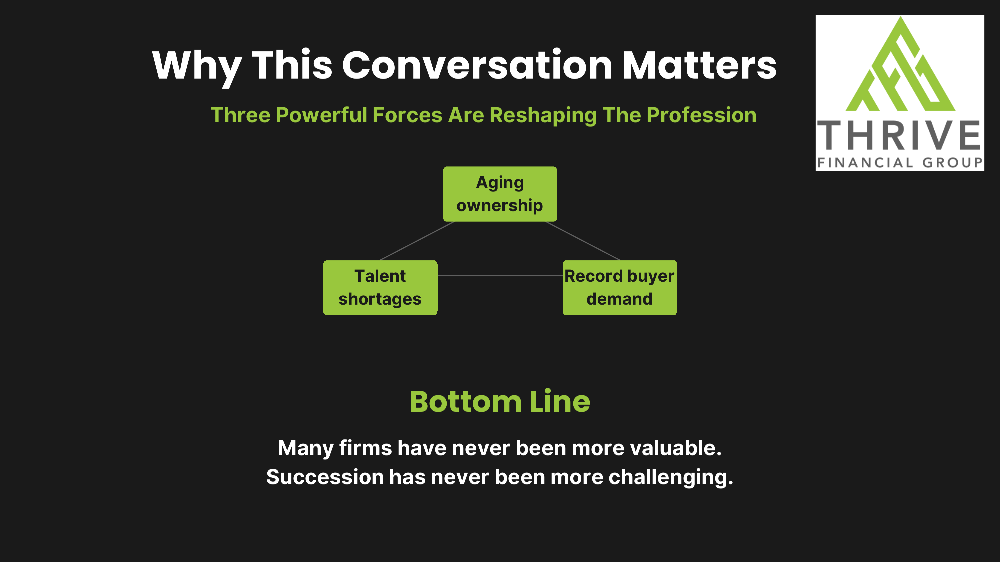
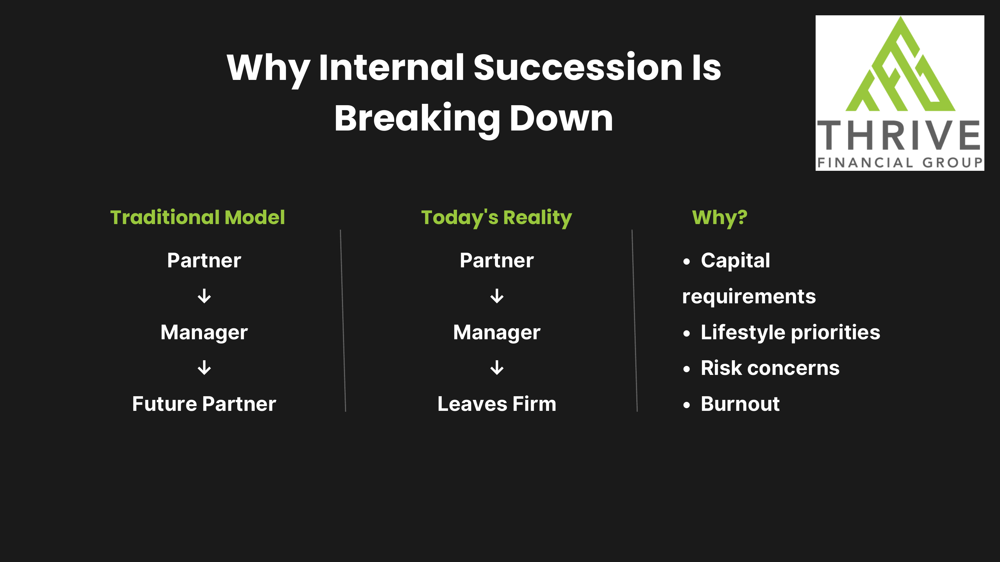
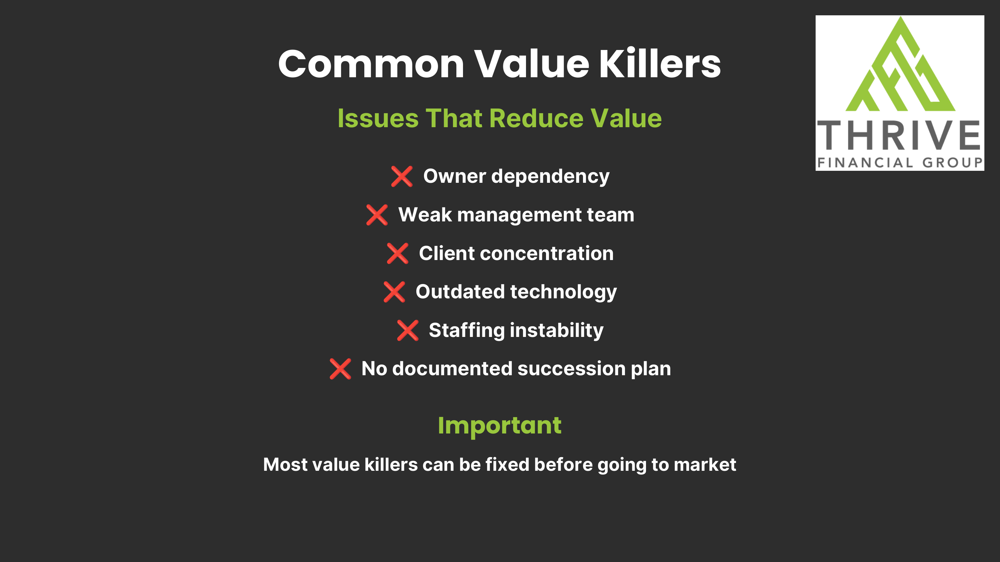
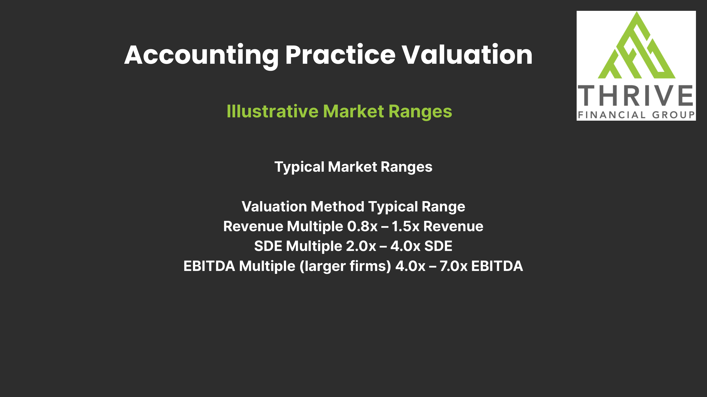
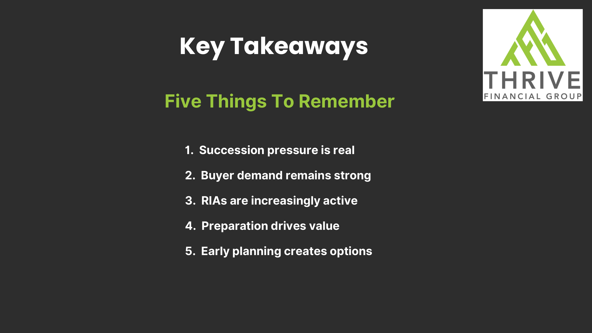

1 为什么重要
三股力量，正在重塑行业
业主老龄化、人才短缺、买家需求创纪录——三者叠加，造就一个看似矛盾的现实：事务所的价值前所未有地高，传承却前所未有地难。需求依然旺盛，但"谁来接班"成了真问题。

2 结构性变化
为什么内部传承在瓦解
传统路径是"经理→未来合伙人"，今天的现实却常常是"经理→离开事务所"。原因集中在：资本要求、生活方式优先级、风险顾虑、职业倦怠。这迫使越来越多业主把目光转向外部买家。

3 可修复的问题
常见的"价值杀手"
降低事务所价值的常见因素：业主依赖、管理团队薄弱、客户集中度过高、技术陈旧、人员不稳定、没有书面传承计划。好消息是——大多数价值杀手都能在上市出售前修复。

4 值多少钱
估值区间（示意）
会计事务所的常见估值区间：营收倍数 0.8x–1.5x、SDE 倍数 2.0x–4.0x、EBITDA 倍数（较大事务所）4.0x–7.0x。但要记住：营收本身并不决定价值——领导团队、经常性顾问收入、增长、现代技术、客户留存与多元化才驱动溢价倍数。买家尤其偏爱经常性收入、强留存、可预测现金流。

Key Takeaways
五点要记住
- 传承压力是真实的——业主老龄化叠加内部接班瓦解。
- 买家需求依旧强劲——PE 整合方、RIA、地区平台都在收购。
- RIA / 财富管理方越来越活跃——因为 CPA 离客户最近。
- 准备驱动价值——价值杀手大多可在上市前修复。
- 尽早规划创造选择权——"规划退出的最佳时机，是你还不需要它的时候"。
